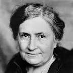
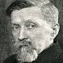

Apprenez, Grandissez, Excellez !


Apprenez, Grandissez, Excellez !
Afin d'assurer une formation de qualité et adéquate à chaque apprenants, nous disposerons de trois formes de pédagogies scolaires.
Pédagogie active
La pédagogie active est le socle commun aux modèles de pédagogies alternatives. Elle part du principe que l’enfant est moteur de son éducation et de ses apprentissages grâce à ses compétences innées. La pédagogie active préconise que l’enfant construise lui-même ses savoirs en se mettant dans une posture d’expérimentation et de recherche. Il est par conséquent actif et non passif dans son parcours scolaire.
Contrairement aux principes de la pédagogie traditionnelle, la pédagogie active considère que ce n’est pas l’adulte seul qui détient le savoir : l’enseignant est plutôt un facilitateur et un médiateur dans l’acquisition des connaissances par l’enfant et dans son épanouissement dans le groupe.
Pédagogie Montessori
Maria Montessori est une psychiatre et anthropologue italienne du début du XXe siècle. Son travail auprès d’enfants d’une clinique psychiatrique la mène sur le chemin de l’éducation alternative. Partant du constat que l’enfant est tout à fait compétent pour apprendre seul, elle préconise un environnement et des outils éducatifs qui encouragent et développent ce potentiel d’apprentissage dans toutes ses dimensions : physique, intellectuelle, émotionnelle, sensorielle, sociale… Pour Maria Montessori, « la fonction du milieu n’est pas de former l’enfant mais de lui permettre de se révéler. »

Pédagogie Decroly
Ovide Decroly, pédagogue et psychologue belge des années 30, est le fondateur de la méthode globale d’apprentissage. On retrouve dans cette pédagogie alternative l’idée que l’école n’est pas seulement un lieu de transmission de savoirs mais un lieu de développement de l’enfant comme individu et comme être social. La pédagogie Decroly préconise que l’école doit soutenir l’enfant à développer sa personnalité et s’adapter à la société. Cette pédagogie active pose aussi le principe que les goûts et compétences innées de l’enfant sont un moteur puissant pour ses apprentissages.
